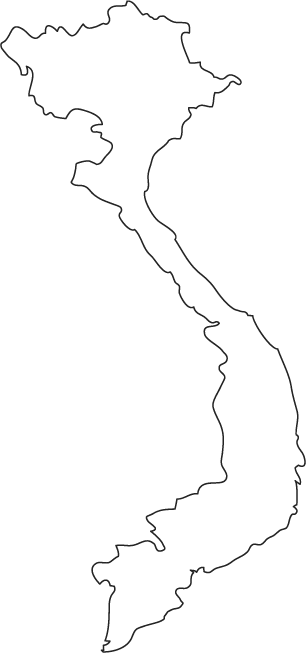
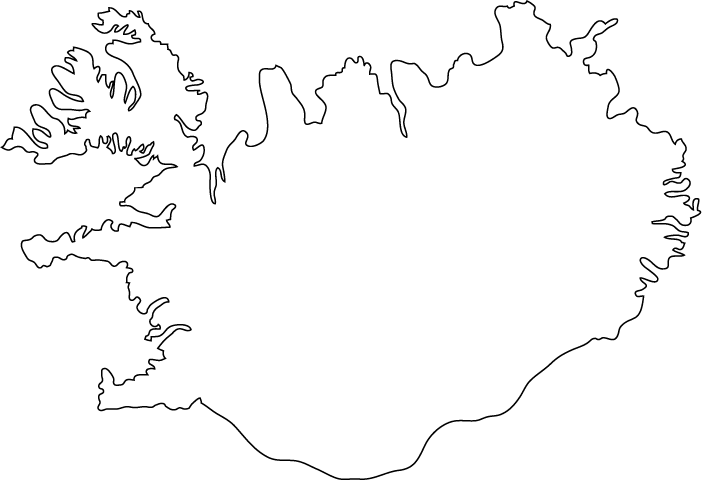
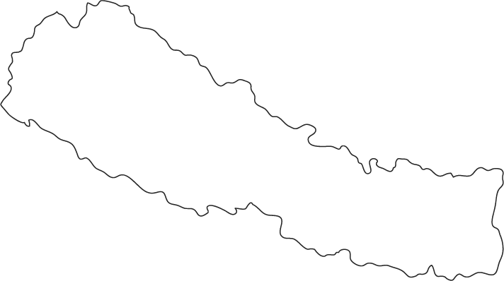

-

Vietnam
Vietnam was the second time that I had gone on a trip alone. Travelling alone is a great way to decompress, but you definitely have to be self-reliant and comfortable being alone for long periods. Before I left for Vietnam I had a very bad cold. Because of that, during a layover in South Korea I accidentally lefy my favorit jacket in a bathroom. Luckily I had taken my passport out pf my jacket pocket a few minutes beforehand. I could have been trapped in South Korea forever.
When I finally got there, it was 11:30 pm and I went straight to bed. The next morning I woke up at 6, got on a bus, and headed to Ha Long Bay. Ha Long Bay is an archipelago off the Northern coast. The Bay can be divided into two sections - the unrestricted portion and the UNESCO-protected side. The Bay was chosen as a UNESCO site due to the thousands of small islands made of limestone.

-

Iceland
Last year I went to Iceland! It is probably my favorite country that I have been to - the people were all very quiet, which I appreciate, but when you interacted with them they were warm and welcoming. A winning combination in my book. I went there with three friends and we lived out of a van for two weeks. We originally had planned to swithc off sleeping in a tent outside every night, but due to major wind storms across the majority of the country we ended up all sleeping in the van together.
Starting in Reykjavík, we made our way clock-wise around the island. Since the majority of Iceland is in the Arctic Circle they have a hard time growing enough food the feed their population of 300,000. A short growing season combined with strict envorinmental protection regulations means that almost everything needs to be imported, making it a very expensive country. At one point we saw 4 tomatoes on sale for $8 USD. I paid $22 USD for a pint of beer. To save money we filled a suitcase full of freeze dried vegetables and pasta. I got questioned about it at the Airport.

-

Nepal
Nepal was definitely my most adventurous trip. I actually bought the ticket to spite my friend Laura who promised to go to Iceland with me and then cancelled because this trip came up. We flew out on Halloween and after many layovers landed in Kathmandu. We spent a few days in the city before hopping on another plane to Lukla, landing in the most dangerous airport in the world. The landing strip is on a steep incline because it is roughly 200m long, ending in a cliff face. Taking off is not much better, as the end of the runway is a sheer drop. If your not going fast enough at the end of the runway gravity takes over.
After surviving the airport, we began our trek to Mount Everest. Our starting altitude was around 9,000' and over the course of the next two week we would climb up and additional 10,000' to finally reach Mount Everest Base Camp. A list of annoying things I dealt with during that time:
- Getting a cold
- Dust filling my lungs
- Altitude sickness
- Donald Trump becoming president

-

Australia
I am not a fan of the sun. I am not a fan of heat. Australia has both of these things in excess. But Australia also has my cousin who I grew up with. So I decided to visit them and run from shady spot to shady spot like a lizard in the dessert for two weeks.
Some interesting things about Australia:
- In NSW it is illegal to hold a Koala, but you can touch it with one hand at a time.
- A few hours South of Sydney(NSW) in Victoria, it is legal to hold Koalas
- Australians love their fancy coffee. Starbucks failed there, but there are coffee shops everywhere.
I got to see Sydney like a local since I was with two of them. Its a method of seeing a city that I liked, but I havent had a chance to do it since.